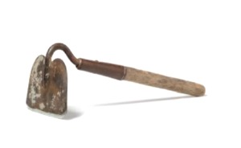

This is an archived copy of History Matters, provided by the Roy Rosenzweig Center for History and New Media. To explore this content in a new interface, visit Who Built America?.

The Object of History: Behind the Scenes with the Curators of the National Museum of American History
http://objectofhistory.org/
Created and maintained by the National Museum of American History in partnership with the George Mason University Roy Rosenzweig Center for New History and Media.
Reviewed Aug.Oct. 2010.
The Object of History Web site is a joint project of George Mason University’s Roy Rosenzweig Center for History and New Media and the Smithsonian Institution’s Museum of American History relating artifacts from the museum’s collections to a “major” topic in U.S. history. Curriculum materials, online forums with Smithsonian curators and historians, and a “Guide to Doing History with Objects” equip students to learn how to build virtual exhibitions (replicating the kind of work museum curators do). There is Web-publishing software to replicate the organizational structure of The Object of History for students, allowing them to build their own virtual museum and lessons.

This site provides illustrations of each featured object, curator interviews, links to other resources such as documents from the Library of Congress’s American Memory project or the documentary editions of historical figures, and lesson plans. Featured objects that I viewed include Thomas Jefferson’s desk used in the writing of the Declaration of Independence, a gold nugget, a silver teapot, a 1937 Negro leagues all-star game baseball, a Kodak Brownie camera used to take photos of Titanic survivors, and an 1875 Remington typewriter.
Perhaps the most useful elements of this site are the guides for building a Web site interpreting an object, with opportunities for students to pose questions to curators and to use research sources. Particularly noteworthy are the brief essays by Steven Lubar and Kathleen Kendrick on artifacts, considering their differences from other historical sources, why they are acquired by museums, and what they tell us about the past. The authors emphasize looking for stories in people’s lives. So the teapot tells us about tea parties, relationships between craftsmen and apprentices, the craftsman and his patron, and family ties. The site also features related research links to topics such as documentary photography, advertisements, images, and objects.
The weakest part of the site is its lack of explanation of the intended age range of students, although one can assume that it is either intended for high school students or for teachers who can draw on the materials and direct their lessons to students from middle school on up. There are telltale signs of a project involving K12 school ages, with a focus on critical thinking and statements such as this: “So as you consider the artifacts on this Web site, use them not only to understand the past, but also as a way to discuss the present.” The design and appearance of the site are utilitarian and quite functional, although some might find it spare and in need of a more attractive design (yet, we all know that sometimes such design gets in the way of usability). This is a good tool for teachers and their students to learn more about the objects of history.
Richard J. Cox
University of Pittsburgh
Pittsburgh, Pennsylvania